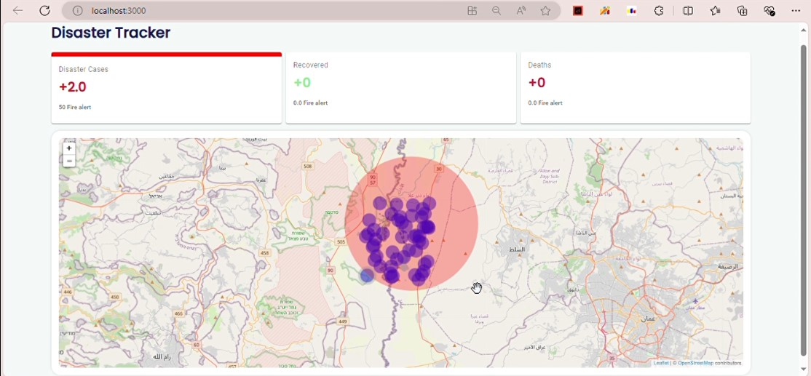

Project Documentation
Repository: GitHub - Fire Analysis
Note: Some features can be found in the Development branch. Once they are
complete and tested, they will be merged into the main branch.
Overview
Fire Detection System Overview
Our fire detection application is designed to receive and analyze user-submitted alerts to identify potential fire incidents. This document details the processes and algorithms involved in detecting and managing fire alerts.
The system processes geospatial data related to natural disaster alerts, correlating them based on time and location to identify possible disaster events.
Each event is represented by geographical coordinates, including location, spread radius, temporal data, and statistical attributes such as severity, credibility, and other relevant metrics.
Alert Reception and Processing
- The application receives alerts from users indicating potential fire outbreaks.
- Each alert contains coordinates and a radius defining the affected area.
- Upon receiving an alert, a dormant node is created to represent the fire occurrence in that location.
Event Analysis and Intersection
- To analyze fire alerts, the system identifies all events within the same area that may overlap with the fire.
- Each alert triggers a database query to retrieve all alerts within the specified range corresponding to the fire's spread area.
- Intersecting events are merged based on their overlapping areas.
Database
In non-relational database design (such as MongoDB), before defining the schema, it is essential to first consider the queries. What data do I need to access frequently? What data do I not need in real-time? What data plays a crucial role in analysis? From there, several logical solutions emerge, and we choose the one that best fits our project.
Understanding the Scenario
Let’s begin by understanding the scenario in which spatial and temporal analysis occurs. Events are coming related to a specific location, and since the events arrive in real-time, the time is tied to the current moment. Therefore, I need to search for all previous events that are still active and geographically related to the new event, compare them with the current event, then create a new active event, calculate the statistical data for this event, and add it to the table while deleting the previous events.
Core Database Operations
- Fetch all events in the geographical area where the event occurred.
- Add a new event to the database.
- Remove inactive events from the database.
We need a way to read data at very high speeds while considering write time.
Geospatial Queries
Let’s assume the event occurred at a location with coordinates x, y. We need to fetch all events within the area:
disaster_x in [x- 1 Km, x+ 1 km]
disaster_y in [y- 1 Km, y+ 1 km]
Then compare these events with the current event. After this, we might need to delete, at most:
disaster_x in [x- 1 Km, x+ 1 km]
disaster_y in [y- 1 Km, y+ 1 km]
Assuming these events become incomplete and merge with the current event.
Deletion Process
The deletion process may not be a big issue if there are no complex indexes that require large write operations. Since I already know what I will delete, I know exactly where it is and can remove it using its ID. This is an acceptable solution.
Search Efficiency
The main challenge lies in the ability to find this data, especially when searching through millions of current events. To address this, I have documented the algorithms I proposed to enhance search efficiency and performance in the following file: Algorithm Optimization Document . One solution I considered is leveraging latitude and longitude and dividing the map into fixed grid squares, each measuring 1 km². Each square is assigned a unique identifier, and every event belonging to a specific grid section is determined through certain calculations.
We can imagine a situation where all decimal numbers between the range [1, 2) are distinguished by the number 1. Then, we can query the database to search for all numbers associated with the number 1 and retrieve them. By indexing these values, we can retrieve them much faster.
Table Structure
This formed a table representing events that includes fields identifying the map section the event belongs to and some statistical data.
Although all data in this table have a one-to-one relationship, one improvement I made to increase the efficiency of data retrieval and reading is to divide the data into multiple groups. Now, I have three types of tables:
- The first table contains the spatial data of active events, represented by geographic coordinates, reference grid, and spread radius.
- The second table contains statistical and descriptive data for active events.
- The third table contains all data related to inactive events.
DisasterMetaDataDoc
| Field | Type | Description |
|---|---|---|
| _id | string | Unique identifier |
| isActive | boolean | Disaster status |
| latitude | number | Latitude coordinate |
| longitude | number | Longitude coordinate |
| radius | number | Affected area radius |
| numOfPost | number | Number of related posts |
DisasterInfoDoc
| Field | Type | Description |
|---|---|---|
| _id | string | Unique identifier |
| position | object | Location details |
| startAt | number (timestamp) | Disaster start time |
| endAt | number (timestamp) | Disaster end time |
| severity | number | Disaster severity |
| confidence | number | Confidence level |
| numLikes | number | Number of likes |
DisasterArchiveDoc
| Field | Type | Description |
|---|---|---|
| _id | string | Unique identifier |
| latitudeIndex | number | Latitude grid index |
| longitudeIndex | number | Longitude grid index |
| isActive | boolean | Disaster status |
| position | object | Location details |
| radius | number | Affected area radius |
| startAt | number (timestamp) | Disaster start time |
| endAt | number (timestamp) | Disaster end time |
| severity | number | Disaster severity |
| confidence | number | Confidence level |
| numOfPost | number | Number of related posts |
Search Strategy
The idea in this section is that the only place I need to search is the first table to get the data for nearby events. Data in the second table is only needed when a certain condition is met: the events are related, and the number of related events will be very few compared to the number of events within a given geographic section. These can be fetched very quickly using their unique IDs and indexed.
As for the third table, it contains data that does not help in real-time analysis, so I can remove it from the first and second tables to reduce search complexity, especially since this data is cumulative and could grow to very large sizes, hindering both search and write operations.
Using DAL for Database Operations
One of the patterns used to implement the database in the code is through the Data Access Layer (DAL). This approach is useful for separating the database operations from the analysis logic, allowing us to switch between different databases without modifying the analysis logic code. This method increases the flexibility of the project and helps with its maintenance.
Cache and Data Retrieval Speed
Since geographically related events come in a synchronized time interval, we can take advantage of this and minimize the number of operations that require database access. I designed a cache layer above the database logic layer to store data that has been recently accessed in memory. This method reduces the cost of accessing data and improves system performance.
The key point in this layer is that the data for a specific sector in memory must be complete and synchronized with the database. Not all data is considered invalid since we don't know what data is missing or modified. Synchronizing it with the database would cost more than retrieving it fully.
I used some data structures to manage the cache memory, such as the segment tree, to retrieve the least requested and accessed data, and either delete it from memory or replace it.
Diagrams
Class Diagram

Inter-Service Communication
I used gRPC for receiving notifications from other services. Since there are not many inter-service dependencies, gRPC was a suitable and efficient choice, especially with its use of HTTP/2, which enhances communication performance.
Dashboard
I utilized an HTTP server to connect to a front-end dashboard that displays a map. Below is an image showcasing the dashboard layout.
